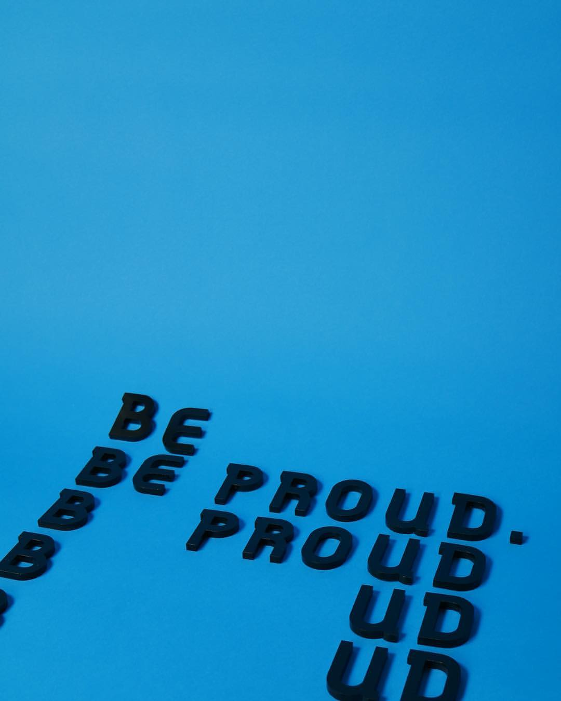
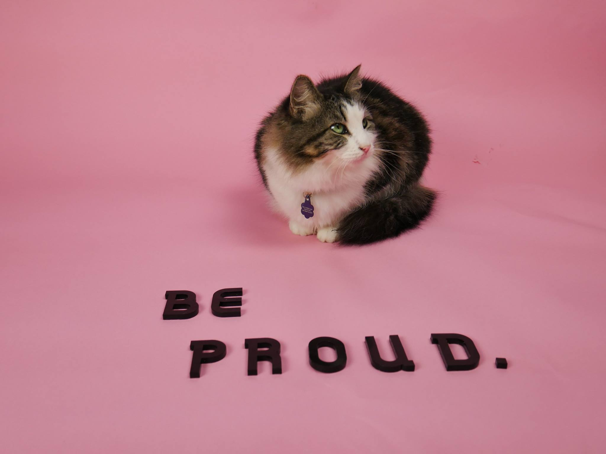
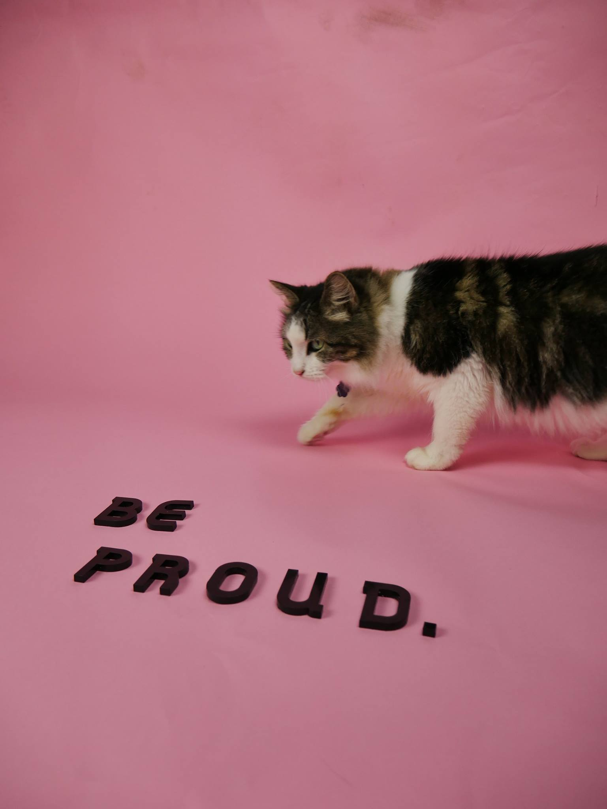
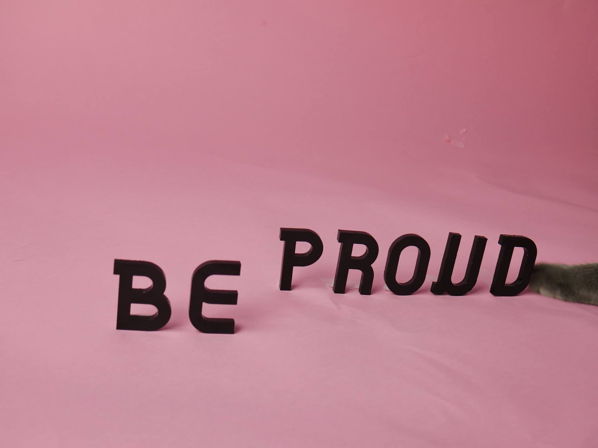

Be Proud
Over the summer, I entered a contest in honor of the designer of the rainbow Pride flag, Gilbert Baker. It is made with laser cut letters, using the free Type With Pride typeface designed by Fontself, NYC Pride, and Animography. Download the free typeface here!
In the process of photographing my entry, I had the help of my roommates cat— Flower. It was a happy accident.



